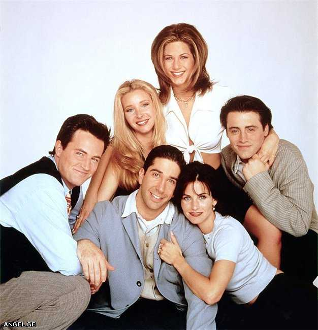
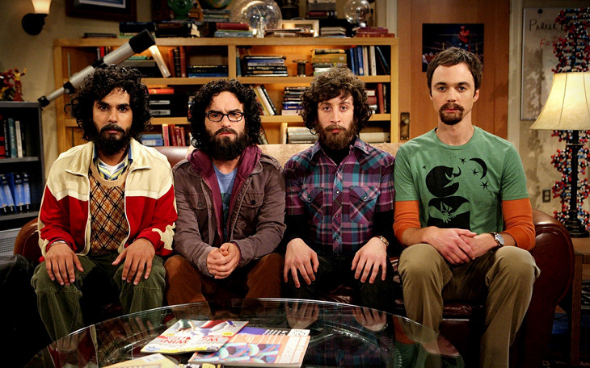
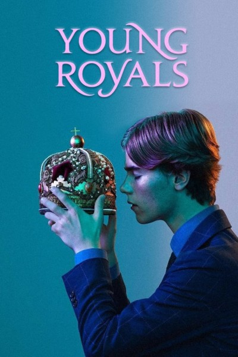

Friends
Ross Geller, Rachel Green, Monica Geller, Joey Tribbiani, Chandler Bing, and Phoebe Buffay are six twenty-somethings living in New York City. Over the course of 10 years and seasons, these friends go through life lessons, family, love, drama, friendship, and comedy

The big bang theory
A woman who moves into an apartment across the hall from two brilliant but socially awkward physicists shows them how little they know about life outside of the laboratory.

Young royals
Prince Wilhelm adjusts to life at his prestigious new boarding school, Hillerska, but following his heart proves more challenging than anticipated.
Sherlock
A modern update finds the famous sleuth and his doctor partner solving crime in 21st-century London.

Game of thrones
Nine noble families fight for control over the lands of Westeros, while an ancient enemy returns after being dormant for millennia.